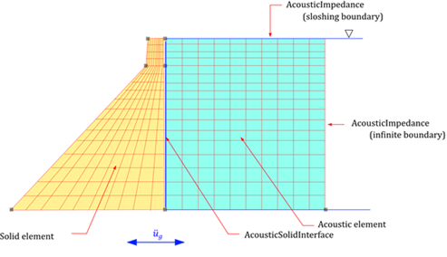
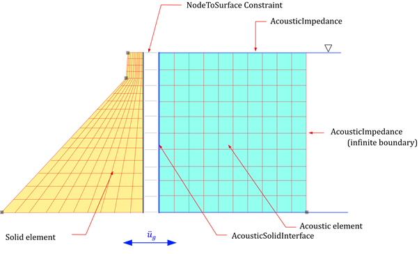
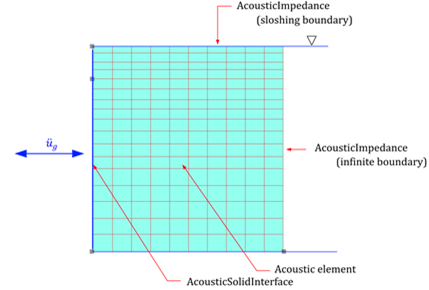

Acoustic Solid 요소
Acoustic solid 요소는 동압력장(dynamic pressure field)에 대한 파동방정식(wave equation)을 사용하는 매질을 해석하는 데 사용된다. 따라서 Step, TYPE=Dynmaic 또는 Step, TYPE=Frequency에만 유효하다. 관련된 요소, 단면, 재로, 경계조건은 다음과 같다.
Acoustic continum element
- AC2D3 : 2차원 삼각 trianglular
- AC2D4 : 2차원 4절점 quadrilateral
- AC3D4 : 3차원 4절점 tetrahedron
- AC3D6 : 3차원 6절점 prism
- AC3D8 : 3차원 8절점 hexahedron
- AC2D4PMDL : 차원 4절점 PMDL 요소.
- AC3D8PMDL : 3차원 8절점 PMDL 요소.
Load
- Concentric : concentric flux를 절점에 작용시킴.
- DisplacementLoad : 0이 아닌 pressure 조건.
- SurfaceDistributed : flux를 요소 표면에 작용시킴.
Constraint
- Support : pressure를 0인 조건.
- AcousticImpedance : impedance boundary condition을 부과
- AcousticSolidInterface : 솔리드 요소와 유체의 연결면을 설정하거나 또는 지진하중 변환
Section
- SolidSection 적용하나 재료는 AcousticMaterial을 사용해야 함
Material
- AcousticMaterial : 체적탄성계수와 밀도를 정의
그림은 댐에 대한 지진해석시 유체-구조물 상호작용을 고려한 모델을 나타내고 있다. 댐체와 유체는 각각 솔리드 요소와 acoustic 요소로 모델링된다. 자유면은 슬로싱을 고려하여 a=1/g,b=0인 AcousticImpedance, far field는 a=0,b=β/c인 AcousticImpedance를 적용한다. 유체-고체의 경계면은 AcousticSolidInterface를 적용한다.

Fig. 4.7-1. 유체-구조물 상호작용을 고려한 댐의 지진해석
유체와 구조물의 메쉬가 일치하지 않는 경우에는 유체면에 AcousticSolidInteraface를 설정하고, 다시 접하는 구조물면과 구속조건을 부과하는 방식으로 모델링을 수행할 수 있다. 또한 댐체를 강체로 가정하는 경우 지진해석시는 솔리드요소가 없더라도 구조물과 접하는 유체 표면에 AcousticSolidInterface를 설정해야 지진하중이 가력되게 된다.

Fig. 4.7-2. 유체-구조물 상호작용을 고려시 유체와 구조물의 메쉬가 일치하지 않는 경우의 처리

Fig. 4.7-3. 유체-구조물 상호작용을 고려하지 않는 댐츼 지진해석(강체 댐 가정)
AC3D8PMDL 등과 같이 PMDL 요소는 *Section, TYPE=Solid에서 어떤 정식화(PMDL 또는 SimplePMDL)을 사용할지, 어떤 방향으로 파진행방향을 적용할지 지정해야 한다. SimplePMDL의 경우 midpoint integrated element formulation을 사용한다. 이 방법은 는 표준 유한요소 정식화에서 가우스 적분점을 주어진 방향으로 중앙점에서만 사용하여 파전파 해석시 무한영역을 경제적으로 해석하는 용도로 사용된다.
- AC2D4에서 R 방향 지정: 강성행렬 계산시 1x2, 질량행렬 계산시 1x3
- AC2D4에서 S 방향 지정: 강성행렬 계산시 2x1, 질량행렬 계산시 3x1
- AC2D4에서 RS 방향 지정: 강성행렬 계산시 1x1, 질량행렬 계산시 1x1
- AC3D8PMDL에 R방향 지정 : 강성행렬 계산시 1x2x2, 질량행렬 계산시 1x3x3
- AC3D8PMDL에 S방향 지정 : 강성행렬 계산시 2x1x2, 질량행렬 계산시 3x1x3
- AC3D8PMDL에 T방향 지정 : 강성행렬 계산시 2x2x1, 질량행렬 계산시 3x3x1
- AC3D8PMDL에 RS방향 지정 : 강성행렬 계산시 1x1x2, 질량행렬 계산시 1x1x3
- AC3D8PMDL에 TR방향 지정 : 강성행렬 계산시 1x2x1, 질량행렬 계산시 1x3x1
- AC3D8PMDL에 ST방향 지정 : 강성행렬 계산시 2x1x1, 질량행렬 계산시 3x1x1
- AC3D8PMDL에 RST방향 지정 : 강성행렬 계산시 1x1x1, 질량행렬 계산시 1x1x1
Example
#########################
# Mesh
#########################
*Node
1, -96.80, 0
11, 0, 0
21, 100, 0
1301, -9.8, 111.534
1311, 0, 111.534
1321, 100, 111.534
1701, -9.8, 122
1711, 0, 122
1721, 100, 122
*NGen, NSET=bottom
1, 11, 1
11, 21, 1
*NGen, NSET=middle
1301, 1311, 1
1311, 1321, 1
*NGen, NSET=top
1701, 1711, 1
1711, 1721, 1
*NFill
bottom, middle, 100, 0.2
middle, top, 100, 9.8/9.8
*Element, TYPE=CPE4
1, 1, 2, 102, 101
*ELGEN, ELSET=dam
1,10,1,1, 17, 100, 100
*Element, TYPE=AC2D4
11, 11, 12, 112, 111
*ELGEN, ELSET=water
11,10,1,1, 17, 100, 100
#########################
# Material/Section
#########################
*Material, Type=Acoustic, Name=water
# 2190.4E+6, 1000 # bulkModulus, density
0, 1000 # bulkModulus, density
*Section, Type=Solid, Name=water
water, 1 # thickness
*Material, Type=IsoElasticity, Name=dam
25E9, 0.2, 0, 2300 # E, nu, alpha, density
*Section, Type=Solid, Name=dam
dam, 1 # thickness
*Distribution, Type=Section
dam, dam
water, water
#########################
# Surface and NSET for Load
#########################
*Surface, Name=FreeSurface
3@1611:1620
*Surface, Name=FarField
2@20:1620:100
*Surface, Name=DamInterface
4@11:1611:100
*NSET, Name=DamBottom
1:11
#########################
# Constraint & Load
#########################
*Constraint, Type=AcousticImpedance, Name=FreeSurface
FreeSurface, 1/9.81,0
*Constraint, Type=AcousticImpedance, Name=FarField
FarField, 0, 1/1480
*Constraint, Type=AcousticSolidInterface, Name=DamInterface
DamInterface, 1000
*Constraint, Type=Support, Name=DamBottom
DamBottom, X|Y
*Function Type=File Name=acc
# ELC270-AT2, 0.01, 32.2*12 # scaled by G
ELCchopra.dat, 0.02, 32.2*12 # file, xstep, scale, comment : scaled by G
*LOAD, TYPE=Earthquake, Name=Earthquake, Func=acc
1,0,0
*STEP, TYPE=Dynamic, Name=Coupled
EquiTime,0.02,40.
*Activate, TYPE=Element
dam, water
*Activate, TYPE=Constraint
DamBottom, FreeSurface, FarField, DamInterface
*Activate, TYPE=Load
Earthquake
*RayleighDamping
Equivalent,3.54542, 8.00412, 0.05, 0.05, dam
*History File=Coupled.csv
D.X@1701
*Element, TYPE=AC2D3
*Element, Type=AC2D3, ELSet=elset
id, n1, n2, n3{, S=section }
...
Specifications
- No. of nodes : 3
- No. of integration pts. : 1
- Fields : Material model at each Gauss points
- Compatible section : SolidSection
- Active DOFs : P
*Element, TYPE=AC2D4
*Element, Type=AC2D4, ELSet=elset
id n1 n2 n3 n4{, S=section}
...
Specifications
- No. of nodes: 4
- No. of integration pts.: 2-by-2
- Fields: Material model at each Gauss points
- Compatible section: SolidSection
- Active DOFs: P
*Element, TYPE=AC3D4
*Element, Type=AC3D4, ELSet=elset
id n1 n2 n3 n4 {, S=section}
...
Specifications
- No. of nodes : 4
- No. of integration pts. : 1
- Fields : Material model at each Gauss points
- Compatible section : SolidSection
- Active DOFs : P
*Element, TYPE=AC3D6
*Element, Type=AC3D6, ELSet=elset
id n1 n2 n3 n4 n5 n6{, S=section}
...
Specifications
- No. of nodes : 6
- No. of integration pts. : 2
- Fields : Material model at each Gauss points
- Compatible section : SolidSection
- Active DOFs : P
*Element, TYPE=AC3D8
*Element, Type=AC3D8, ELSet=elset
id n1 n2 n3 n4 n5 n6 n7 n8{, S=section}
...
Specifications
- No. of nodes : 8
- No. of integration pts. : 2-by-2-by-2
- Fields : Material model at each Gauss points
- Compatible section : SolidSection
- Active DOFs : P
*Element, TYPE=AC2D4PMDL
*Element, Type=AC2D4PMDL, ELSet=elset
id n1 n2 n3 n4{, S=section}
...
Specifications
- No. of nodes: 4
- No. of integration pts.: formulation depependent*
- Fields: Material model at each Gauss points
- Compatible section: SolidSection
- Active DOFs: P
2-by-2 integration is used for PMDL formuation, but 1-by-2 or 2-by-1 integration is used for SimplePMDL formuation
*Element, TYPE=AC3D8MPMDL
*Element, Type=AC3D8PMDL, ELSet=elset
id n1 n2 n3 n4 n5 n6 n7 n8{, S=section}
...
Specifications
- No. of nodes : 8
- No. of integration pts.: formulation depependent*
- Fields : Material model at each Gauss points
- Compatible section : SolidSection
- Active DOFs : P
2-by-2-by-2 integration is used for PMDL formuation, but 1-by-2-by-2, 2-by-1-by-2, or 2-by-2-by-1 integration is used for SimplePMDL formuation